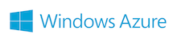
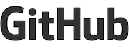

PyCon APAC 2013 in Japan Sponsors¶
Platinum¶
 ¶
¶
株式会社ゴーガは、位置情報の利活用をつうじて、お客さまの企業活動を最大限にバックアップいたします。
地図システムの開発では、Google社を始めとする地図サービスベンダーの開発パートナーとして、店舗検索、営業支援、安否確認、車両管理など、多岐に渡る地図システムの企画開発を行っています。
データ分析においては、消費者行動、市場動向、広告戦略など、様々な社会経済現象をモデル化しシミュレーションを行うことで、その経済現象に隠れた構造の抽出を行い、企業の意思決定を支援しております。
これらの活動を行う中で、Pythonを中心的なサーバーサイド言語として利用しています。Google App Engine、Python、kay-framework、Djangoなど、今や企業システムにも十分適用できる画期的なテクノロジーを用いて、経営戦略の実現や業務効率化を進めています。
現在業容拡大につき、エンジニアの採用活動に、積極的に取り組んでいます。Pythonを使ってシステム開発をしたい方、もしくは弊社事業に興味がある方はぜひご連絡ください！
 ¶
¶
- Basho
- http://basho.com
Bashoは分散システムの会社で、RiakというOSSの分散データベースと、Riak CSというクラウドストレージソフトウェアを開発しています。どちらも高可用性、耐障害性、スケーラビリティが特徴で、ゲームからモバイル、ヘルスケアの分野にわたってFortune 50の25%以上の企業で利用されています。2012年にはAPACをサポートするために東京オフィスをオープンしました。
Pythonを始めとする多くの言語、環境でのRiakの クライアントライブラリ をBashoが公式にサポートしています。クリティカルなデータにいつでもアクセスできなければならない企業にとって、Bashoの提案するソリューションは理想的です。Web, モバイル、ソーシャルアプリ、モニタリングデータの保存から、パブリックまたはプライベートなクラウド環境の構築まで、様々なユースケースがあります。
 ¶
¶
- CyberAgent
- http://www.cyberagent.co.jp/
サイバーエージェントは、スマートフォン向けコミュニティ&ゲーム「Ameba」を運営するAmeba事業をはじめ、ソーシャルゲーム事業、インターネット広告事業でも日本トップ規模の売上高を誇っております。また、日本国内及びアジア圏におけるインターネット企業への投資・育成活動も行っており、インターネット業界のパイオニアとして、総合的にサービスを提供しております。「21世紀を代表する会社を創る」をビジョンに、インターネット黎明期から現在に至るまでに培ったノウハウに基づく新規事業の立ち上げスピードとインターネットサービス運営に強みを持ち、現在では多数のスマートフォンサービスやソーシャルゲームを運営しています。
中でも、当社の代表的なサービスである「Ameba」では、月間2,800万人以上の方が利用するインターネットメディアとして、スマートフォン・PC・フィーチャーフォン上において、無料で開設可能なブログサービス、アバターコミュニティ「アメーバピグ」、スマートフォン向けゲームやコミュニティなど様々なサービスを提供しています。また最近では、小学生向けIT教育やアントレプレナーシップ輩出支援、育児中の女性支援などといった社会的な取り組みもおこなっております。
Gold¶
¶
- Windows Azure/BizSpark
- http://windowsazure.com/
マイクロソフトは、よりオープンで相互運用性の高い製品/サービスの開発や技術情報提供に力を入れています。
パブリッククラウド「Windows Azure」は、Pythonはもちろんのこと、PHP、Ruby、Node.js、Javaといった各種言語向けのSDKを提供しており、開発環境としてはWindowsだけではなくMacやLinuxもサポートしています。統合開発環境「Visual Studio」向けの拡張機能「Python Tools for Visual Studio」を使うことで、Python/Djangoアプリケーションの開発生産性を大きく向上することもできます。Python/Djangoアプリケーションの実行環境としては、IaaS型の「Windows Azure仮想マシン」を使い、LinuxやWindows Serverの仮想マシン上で実行することも、標準でPython/DjangoをサポートしているPaaS型のWebサイトホスティングサービス「Windows Azure Webサイト」を使って簡単にアプリケーションを展開することもできます。
“Microsoft has changed as a company. Now, Microsoft is Open to Open Source.” 今後のマイクロソフトのオープンな取り組みにご期待ください。
 ¶
¶
Google では、オープンソースのソフトウェアや開発手法を積極的に利用すると共に、支持をしています。そして、Google は様々な形でオープンソースコミュニティに還元しています。例えば、3500 万行のソースコードや Google Code におけるプロジェクトホスティング、Google Summer of Code や Google Code-in のコンテストといった学生向けのプログラム、更には世界中の多岐にわたるプロジェクトやプログラム、イベントへのサポートといった活動もその一環です。
 ¶
¶
株式会社HDE (HDE) は、クラウド上にシステムを移行したいが、一定のレベルの情報セキュリティ統制の確保が必要なために移行できていない企業に向けて、追加のセキュリティレイヤを提供している企業です。HDEのプロダクト／サービスはGoogle Apps向けメールセキュリティ市場で74%以上のシェアを獲得しており、Erlang/C++/PHPとともにPythonをメインの言語として使用しています。
 ¶
¶
- Atlassian
- https://www.atlassian.com/ja/
アトラシアンはソフトウェア開発ツール、コラボレーションツールを提供するソフトウェア企業です。素晴らしいソフトウェアを計画し、開発し、リリースする世界中のイノベーターを支援しています。アトラシアンの課題管理「JIRA」、コラボレーションツール「Confluence」、無料ソースコードホスティング「Bitbucket」、エンタープライズ向けGitリポジトリ管理「Stash」、グループチャット「HipChat」などのソフトウェア開発製品を活用して、世界中であらゆる規模の25,000以上の企業が賢く素早く協同作業をしています。オンプレミス型「ダウンロード」、クラウド型「オンデマンド」を用意しています。
Silver¶
 ¶
¶
- CodeIQ
- https://codeiq.jp/
 ¶
¶
- zerostart
- http://zero-start.jp/
ゼロスタートは「ECサイト内検索・レコメンド」等の製品展開と「エンジニアの紹介・派遣」を行なっています。自社製品の主要開発言語はPythonです。Pythonエンジニアの育成に熱心に取り組んでいます。
 ¶
¶
- WAVEON
- http://www.waveon.jp/
位置情報（ジオメディア・GPS等を利用したサービスやシステム）や地理空間情報（地図情報・地理情報のシステム）のアプリケーション開発を得意とし、様々なシステムを構築する受託ソフトウェア開発会社です。
 ¶
¶
- Catchball21
- http://www.cb21.co.jp/
株式会社キャッチボール・トゥエンティワンは Python や Django などオープンソースを使ったサイト構築・システム開発を強みにしています。
WEBインテグレーターとしてお客様の目的・ご要望に合わせた最適なご提案をしています。
また、PyCon APACをはじめとする各種イベントへの協賛やオープンソース開発元との協同など、積極的な技術支援を行っています。
 ¶
¶
- Silver Egg Technology
- http://www.silveregg.co.jp/
シルバーエッグ・テクノロジーは日本の大手ネットビジネスを中心にレコメンドサービスを提供。技術力とサポートには高い評価あり。リターゲティング広告サービス、レコメンドメールなどのサービスも提供している。
 ¶
¶
- BizMobile
- http://www.bizmobile.co.jp/
Pythonで構築したMDMサービスを提供し、数十万台の企業デバイスの管理をサポートしています。モバイルワークとDevOpsを推進する仲間を募集中！
 ¶
¶
- Nexedi
- http://www.nexedi.co.jp/
Pythonを使って100%オープンソースの製品を開発しているフランス企業の子会社です。ERPパッケージのERP5やクラウドシステムのSlapOSなどを開発しています。
 ¶
¶
- TriAx
- http://triax.jp/
TriAxは、大学・研究機関や様々な企業とのプロジェクトを通して、実用的な先端技術を日々追いかけています。最高のアウトプットのために、最高の道具にこだわりたい。それが我々がPythonを選ぶ理由です。
 ¶
¶
- FairyDevices
- http://www.fairydevices.jp/
 ¶
¶
- Shannon Lab
- http://shannon-lab.org/
Shannon Lab は人工知能ベンチャー企業です。Python という数理解析に強い言語を活かして、機械学習システムや、音声認識・発話システムを主に扱い、それらを組み合わせた学習型人工知能システムの開発に取り組んでます。
ゼロから一緒に会社を大きくできる Python エンジニアを募集しております。 ご興味ある方はまずは下記よりご連絡ください。待ってます！ http://shannon-lab.org/?page_id=1608
 ¶
¶
- intelligence
- http://www.inte.co.jp/
総合人材サービスの株式会社インテリジェンスは、ブランドスローガン「はたらくを楽しもう（TM）」のもと、誰もが前向きに仕事と向き合える社会の実現を目指し、求職者と企業に向けた幅広いサービスを提供しています。
【提供サービス ：正社員領域・アルバイト・パート領域の求人メディアの運営、人材紹介サービス、人材派遣、アウトソーシングサービス など】
 ¶
¶
- BePROUD
- http://www.beproud.jp/
ビープラウドはPythonをメイン言語としており、優秀なPythonistaが集まるとも知られている会社です。
勉強会BPStudyの主催、IT勉強会のためのサイトconnpass運営など、コミュニティ活動にも積極的に取り組んでいます。
 ¶
¶
- MARIMORE
- http://www.marimore.co.jp/ja/
2007年から個人向けのショートメッセージ（SMS）配信サービスからはじめ、2011年から企業や開発者向けのSMS配信ウェブサービスAPIを提供しています。Djangoを利用しています。
¶
- GitHub
- http://www.github.com/
GitHub is the best way to build software together. Whether it’s your company’s app, your favorite open source library, or a weekend side project, GitHub helps everyone work better by providing tools for easier collaboration and code sharing on any device. Start collaborating today—open source project hosting is free!
 ¶
¶
- Ariel Networks
- http://www.ariel-networks.com/
世界に通用する技術力と、会社の成長戦略を支えお客様の信頼に応える各分野のスペシャリスト達の存在です。『“空気のように意識せず使えるネットワーク・コンピューティング”を、より多くの企業において実現する』 ― これが、アリエルが掲げるビジョンです。世界に通じる技術者と、その技術者が創り上げる製品によって次世代の情報活用シーンをリードし、ビジネスの加速化を支援します。
 ¶
¶
- tracpath
- http://tracpath.com/
tracpath はソフトウェア開発に必要なバージョン管理(Git, Subversion, Mercurial)とプロジェクト管理をクラウドでご提供。tracpath と DevOps に特化したソフトウェア企業です。
 ¶
¶
- Plone
- http://plone.org/
Plone is the leading python-based Content Management System. Plone is secure, flexible, and easy to adapt for organizations of almost any size. From easy theming to powerful work-flows, from integration with LDAP and SQL databases to high-availability scenarios, Plone is the premier choice for professional intranets and websites.
 ¶
¶
- iRidge
- http://iridge.jp/
アイリッジではスマートフォンを利用した位置情報連動型の情報配信プラットフォーム「popinfo」を中心に、O2Oマーケティングに注力しています。その根幹をPython(Django)をはじめとするオープンソースソフトウェア技術およびコンピューティングクラウドなどの技術により開発・運営を行なっています。
 ¶
¶
- Heroku
- http://www.heroku.com/
HerokuはPythonをはじめRubyやJavaなど、複数のプログラミング言語に対応した世界で最も先進的なPaaSです。アプリ開発者はサーバ管理から解放され100%開発に集中できるようになります。
 ¶
¶
- JST ERATO Minato Discrete Strucure Manipulation System Project
- http://www-erato.ist.hokudai.ac.jp/
本プロジェクトは、JST の進める戦略的創造研究推進事業のひとつで、大規模かつ多様な離散データを効率的に処理する基盤技術ならびに応用研究を推進しています。
 ¶
¶
- STREAM PLUS
- http://ustream.siteplus.jp/
ストリームプラスは、YouTube Live、USTREAM、ニコニコ生放送、Livestream などのリアルタイム映像配信を業界No1の実績とノウハウでサポートします。
 ¶
¶
- Studio Ousia
- http://www.ousia.jp/
人工知能を用いた言語解析に関する技術開発を行っています。Cython、gevent、MessagePack-RPC、NumPy、scikit-learn、PiCloud等のライブラリ／サービスを使用。
 ¶
¶
KLab株式会社は、自社で企画・開発した良質なモバイルオンラインゲームやスマートフォンアプリ、信頼性の高いソフトウェアパッケージを提供しています。
 ¶
¶
楽天はEコマースをはじめとして、複数の事業を運営しグローバルに事業規模を拡げています。 事業の基盤となるテクノロジーの開発をほぼ自社内で行っており、『人財』としてのエンジニアを大切にしています。
 ¶
¶
- Bit-isle
- http://www.bit-isle.co.jp/
独立系の都市型データセンターとして最大規模を持つアウトソーシングプロバイダー。グループにシステムインテグレーションのビットサーフやMSPサービスのサイトロックがあり、グループでワンストップのITアウトソーシングサービスを提供しています。
 ¶
¶
- Denso IT Laboratory
- http://www.d-itlab.co.jp/
株式会社デンソーアイティーラボラトリは、ユーザーインターフェース、画像認識、信号処理、セキュリティ等の技術分野の研究開発に特化したデンソーグループ企業です。研究開発ではPythonを利用しています。